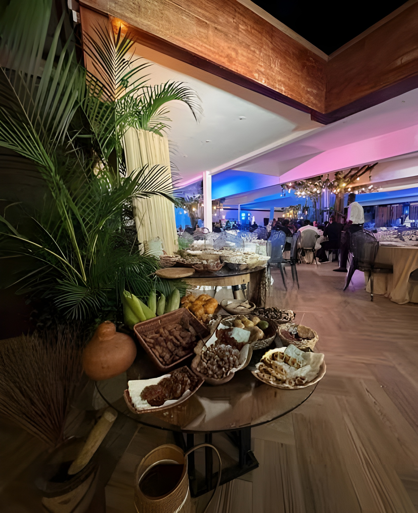
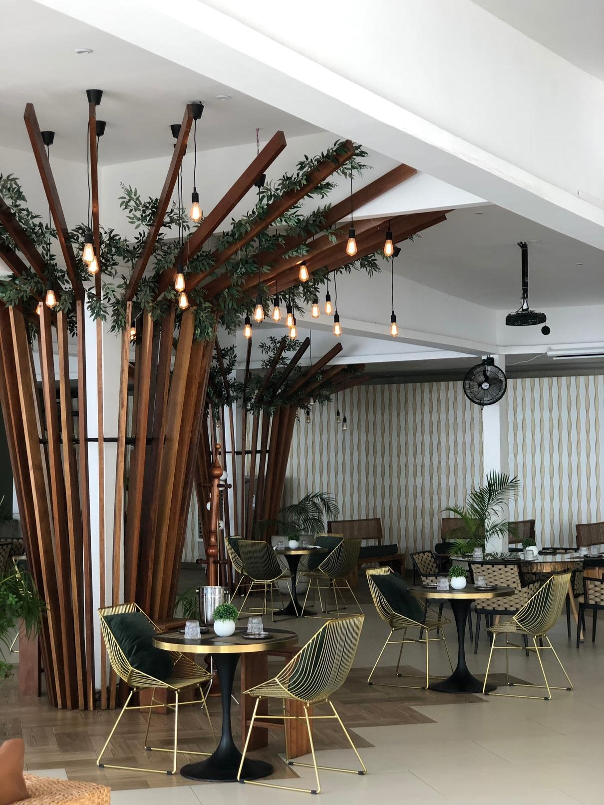
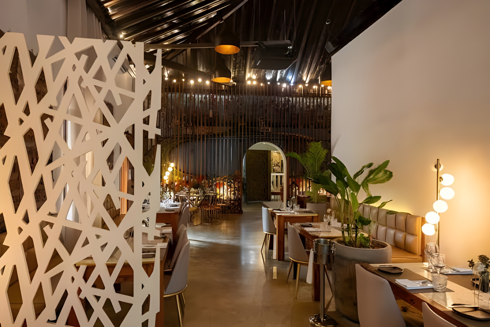
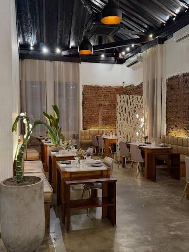
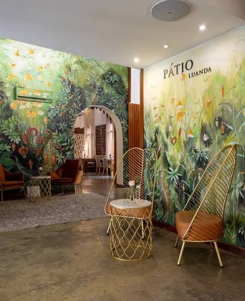

Área infantil
Mais conforto para famílias, com espaço pensado para os mais pequenos.
Os nossos espaços
Do Morro Bento à Mutamba, descubra lugares pensados para celebrar, saborear, descansar e viver bons encontros.

Pátio Morro BentoPátio Luanda
Onde tudo começou. O Morro Bento é a casa-mãe do Pátio Luanda: um destino completo, que junta gastronomia, eventos, alojamento e serviços de catering num só lugar, com a hospitalidade que nos define.
Conhecer o Morro Bento





Roots
by Pátio Luanda
No Roots, a experiência ganha um tom mais intimista e sofisticado. Um espaço onde as raízes de Angola dialogam com uma cozinha de fusão contemporânea. E há também sushi.
Pátio Luanda
No coração da cidade, a Mutamba prolonga o universo Pátio com uma proposta ideal para almoços, encontros e refeições com sabor de tradição e cidade.
Pátio Luanda
Mais um espaço do Grupo Pátio em Luanda, na zona do Aeroporto. Contacte a equipa para confirmar morada, horário e serviços disponíveis.
Obter direções
Pastelaria
Produção própria, sabores do dia e uma pastelaria pensada para acompanhar rotinas, pausas e pequenos prazeres.
Demais áreas e serviços

Mais conforto para famílias, com espaço pensado para os mais pequenos.

Comodidade desde a chegada, com estacionamento no Morro Bento.
Celebrações especiais e encontros empresariais, com apoio da equipa Pátio.
Pedir PropostaSalas de formação, showroom e um ambiente acolhedor para quem fica mais perto do Pátio.
Localizações
Quatro espaços em Luanda, cada um com a sua própria forma de receber.
O horário apresentado é geral. Confirme com a equipa se o espaço escolhido tiver um horário específico.